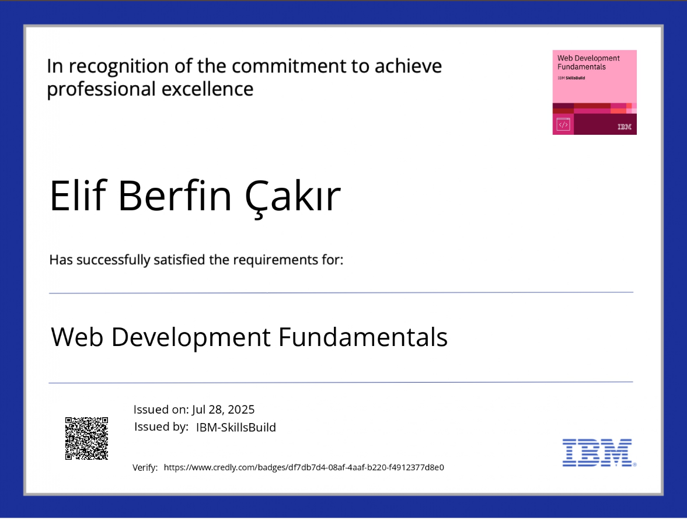

Hi!!! My name is Elif Berfin. As you know, I'm turning 19 in October. I'm excited and a little bit sad at the same time, because it's my last year as a teenager. I was born in Kazakhstan, but then my family decided to move to Türkiye, since my father is from Türkiye. That’s when my adventure in Türkiye began. I graduated from Private Altınyaka High School this year, and now I’ll start university. I know 4 languages: Turkish, English, Russian, and Kazakh, but I want to learn more languages — for example, Spanish, French, German, Japanese, and even sign language. I believe that throughout our lives we keep growing and developing, so we need to learn as many things as possible to keep our brains active and engaged. That’s why I want to learn as much as possible. I also have 5 certificates, which I’ve added below. Also I work as a translator at a notary with my mother.
My plans for the next 10–15 years are to be successful in university, get the highest score possible, and graduate in 4 years. After that, I want to start helping my family so that my mom can feel more comfortable and relaxed. I aim to become a specialized engineer working in Artificial Intelligence and Software Development. I plan to settle permanently in Europe, building both my professional and personal life there. Thanks to my multilingual skills, I will establish strong connections both in the software industry and in translation. In the future, I aspire to create my own tech startup or take a leadership role in innovative projects.